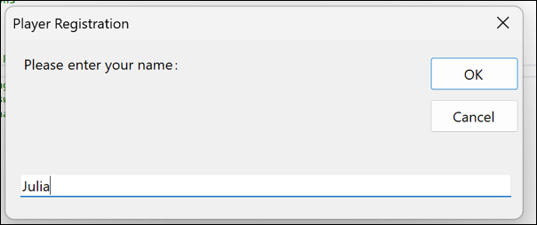
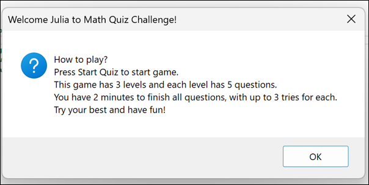
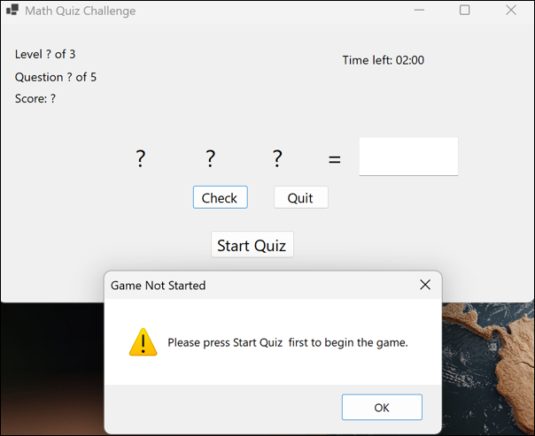
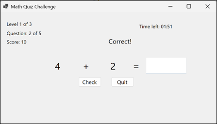

A simple math quiz application developed using C# and Windows Forms.
It allows users to answer math questions and practise their calculation
skills through an interactive quiz interface.
C#Windows FormsVisual Studio
Project Screenshots
A look at the quiz interface and question flow.

Quiz InterfaceThe main interface allows users to start and answer the math quiz.

Answering QuestionsUsers read each math question and enter or select their answers.

Answer FeedbackThe quiz provides feedback after the user answers a question.

Quiz ResultsThe result screen displays the user's quiz performance.
Select any screenshot to open it at a larger size.
About the Project
The Math Quiz Challenge is a desktop application developed using C# and Windows Forms.
It allows users to answer math questions through a simple and user-friendly interface.
Users can read each question and select or enter their answers using the available controls.
The application processes the answers and displays the results based on the user's responses.
The system uses Windows Forms to create the quiz interface and C# to handle the program logic.
It was developed to provide a simple way for users to practise their math skills through an
interactive quiz.
What I Learned
I learned how to use C# to write program logic and Windows Forms to design the user interface.
I also practised creating buttons, handling button clicks, processing user input, and
displaying quiz questions and results.
In addition, I gained a better understanding of how to connect the user interface with the
program logic so that the application can respond to user actions. This project helped me
practise using C# to develop a desktop application and improve my understanding of Windows Forms.
Design Wireframe
The wireframe shows the planned quiz layout and main interface elements.